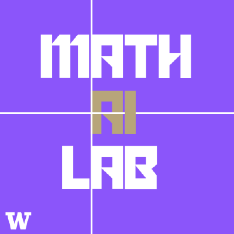

Math AI Lab
The University of Washington Math AI Lab is a research and education organization focused on using AI for math, directed by Vasily Ilin and Jarod Alper.
Publications & Preprints
Selected recent Math AI Lab papers. The full research page collects the lab's current conference papers, workshop papers, preprints, and essays.
Estimating probability density and its score from samples remains a core problem in generative modeling, Bayesian inference, and kinetic theory. DiScoFormer bridges classical kernel methods and neural score models with a plug-in transformer-based estimator.
ICLR 2026, Logical Reasoning of LLMs Workshop Semantic Search over 9 Million Mathematical TheoremsSearching for mathematical results remains difficult because most tools retrieve entire papers, while mathematicians and theorem-proving agents often seek a specific theorem. This work introduces semantic theorem retrieval across a unified corpus of 9.2 million theorem statements.
ICLR 2026, VerifAI Workshop Learning to Repair Lean Proofs from Compiler FeedbackAs neural theorem provers become increasingly agentic, the ability to interpret and act on compiler feedback is critical. This work studies a fine-tuned repair model trained on erroneous Lean proofs paired with compiler diagnostics and corrections.
ICLR 2026, AI with Recursive Self-Improvement Workshop CircuitBuilder: From Polynomials to Circuits via Reinforcement LearningMotivated by auto-proof generation and Valiant's VP vs. VNP conjecture, this project formulates arithmetic circuit discovery as a single-player game where a reinforcement learning agent builds a circuit within a fixed number of operations.
Events
Upcoming events, seminars, and hosted Math AI Lab gatherings.
 Hosted event UW 2026 Lean Hackathon We hosted a Lean hackathon bringing together formalization, math, and AI communities. Jun 5, 2026 Neural Methods for Plasma Simulation and Mathematical Formalization Vasily Ilin · SMI 307
Hosted event UW 2026 Lean Hackathon We hosted a Lean hackathon bringing together formalization, math, and AI communities. Jun 5, 2026 Neural Methods for Plasma Simulation and Mathematical Formalization Vasily Ilin · SMI 307Recent Quarters
Spring 2026 Projects
Current Math AI Lab projects, including autoformalization, Lean infrastructure, and AI for mathematics.
Winter 2026 Projects
Formalization projects, AI projects, and Lean Together meetings from Winter 2026.
Fall 2025 Projects
Fall 2025 project teams across Lean formalization, theorem search, number theory, quantum compilation, and more.

Math AI Lab Photo from Fall 2025
Our members during the Fall Quarter of 2025. The Math AI Lab was formerly called the eXperimental Lean Lab (XLL) and hosted through the Washington eXperimental Mathematics Lab (WXML).